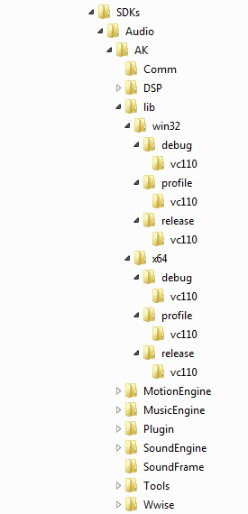

Обзор
Пакет игрового кода содержит исходный код GameDLL C++ вместе с необходимыми файлами заголовков для доступа к большинству систем CRYENGINE. Он урезан для пользователей, у которых нет доступа к полному коду двигателя.
Начиная с версии 3.6.3, пользователи пакета Game Code также получают дополнительный доступ к проектам CryAction и CryInput, включая все исходные файлы, необходимые для сборки CryAction.dll и CryInput.dll для платформ Windows.
Лицензиаты CRYENGINE, получившие полную лицензию на код движка, должны использовать только пакет кода движка, который уже включает в себя все файлы, входящие в пакет кода игры.
GameDLL предоставляет разработчикам проект, в котором они могут реализовать игровой класс на основе интерфейса IGame. Также возможно реализовать новый класс Entity и расширения для игровых систем (например, движения транспортных средств, режим огня или персонажей AI).
Для версии Steam код будет предоставлен в ZIP-файле, расположенном в корневой папке вашей установки. Причина, по которой файлы помещаются в ZIP-файл, заключается в том, что любые внесенные вами изменения не перезаписываются при обновлении Steam вашей установки.
После обновления вы можете либо объединить содержимое нового ZIP-файла с существующим кодом (с помощью системы управления версиями или других инструментов по вашему выбору), либо просто заменить свой код новым кодом, если вы не внесли никаких изменений.
Предварительные условия
Требуемое программное обеспечение
Пожалуйста, обратитесь к Visual Studio Поддерживается Versions_dup для получения информации о том, какая версия Visual Studio и Windows SDK поддерживается.
До CRYENGINE 3.6.3
До 3.6.3: при использовании пакета игрового кода вам не нужно устанавливать какие-либо дополнительные сторонние SDK, все необходимые SDK для сборки GameDLL включены в пакет исходного кода.
CRYENGINE 3.6.3 -> 3.6.15
Начиная с 3.6.3: Чтобы собрать CryInput.dll, вам необходимо получить DirectX SDK от Microsoft. здесь (это бесплатно). После установки необходимо скопировать содержимое установленного SDK (папки Include и Lib) в <CRYENGINE root>\Code\SDKs\DXSDK.
Альтернативно, перед созданием решения кода игры отключите сборку проекта CryInput, сняв флажок в решении. Менеджер конфигурации для всех комбинаций конфигурации и платформы.
CRYENGINE 3.6.9 -> Текущий
Начиная с 3.6.9: Чтобы собрать CryAudioImplWwise.dll, вам необходимо приобрести Wwise SDK от Audiokinetic. здесь. После установки необходимо скопировать папку <Wwise Корень установки>\SDK\include\AK в <CRYENGINE корень>\Code\SDKs\Audio\AK. Затем создайте <корневая папка CRYENGINE>\Code\SDKs\Audio\AK\lib и скопируйте содержимое следующих папок:
| От | Чтобы |
|---|---|
| <Wwise корень установки>\SDK\x64_vc110\Debug\lib | <CRYENGINE root>\Code\SDKs\Audio\AK\lib\x64\debug\vc110 |
| <Wwise корень установки>\SDK\x64_vc110\Profile\lib | <CRYENGINE корень>\Code\SDKs\Audio\AK\lib\x64\profile\vc110 |
| <Wwise корень установки>\SDK\x64_vc110\Release\lib | <CRYENGINE root>\Code\SDKs\Audio\AK\lib\x64\release\vc110 |
| <Wwise корень установки>\SDK\Win32_vc110\Debug\lib | <CRYENGINE root>\Code\SDKs\Audio\AK\lib\win32\debug\vc110 |
| <Wwise корень установки>\SDK\Win32_vc110\Профиль\lib | <CRYENGINE root>\Code\SDKs\Audio\AK\lib\Win32\профиль\vc110 |
| <Wwise корень установки>\SDK\Win32_vc110\Release\lib | <CRYENGINE root>\Code\SDKs\Audio\AK\lib\Win32\релиз\vc110 |
Окончательная структура папок в <CRYENGINE корень>\Code\SDKs\Audio\ должно выглядеть так:

Использование STLport
STLport — это реализация стандартной библиотеки шаблонов с открытым исходным кодом (STL), отличающаяся от реализации по умолчанию, поставляемой с Visual Studio.
Использование STLport больше не рекомендуется, поскольку в Visual Studio добавлены улучшения в STL.
Исходный код STLport включен в состав CRYENGINE SDK. Однако Visual Studio необходимо настроить для использования STLport вместо реализации STL по умолчанию, выполнив следующие действия:
- Перейти к Инструменты/Опции в главном меню и выберите VC++ Каталоги под Проекты и решения.
- Выберите платформу Win32 и добавьте путь <CRY_SDK_ROOT>\Code\SDKs\STLPORT\stlport вверху файла. Включить файлы и Файлы библиотеки список. Очень важно, чтобы путь STLport находился над путями включения и библиотеки по умолчанию Visual Studio в списке.
- При необходимости повторите предыдущий шаг для x64 и других платформ.
Файлы решений
Эта информация относится к CRYENGINE до версии 3.7.0.
В версиях CRYENGINE, начиная с 3.7.0, в качестве системы сборки используется WAF.
Пожалуйста, прочитайте WAF Система сборки информацию о том, как создавать файлы решений Visual Studio.
В следующей таблице описан файл решения, поставляемый с CryENGINE SDK.
Файл решения | Описание |
|---|---|
| Решение доставлено обладателям полной лицензии Engine Code. |
| Решение доставлено другим пользователям. |
Решение CryEngine.sln поставляется только с полным исходным кодом движка. Содержимое решения CryEngine_GameCodeOnly.sln включено в CryEngine.sln.
Решение Game Code всегда можно скомпилировать в конфигурации отладки или профиля. Для компиляции конфигурации выпуска требуется доступ к полному исходному коду движка.
Исходные файлы
Каталог | Описание |
|---|---|
| Заголовки для всех интерфейсов CRYENGINE. |
| Включите заголовки для Game Framework, которые включают реализацию Flowgraph, Vehicle и т. д. |
| Начиная с 3.6.3: Включает все заголовочные и исходные файлы для CryInput в Windows. |
| Начиная с 3.6.9: Включает все заголовочные и исходные файлы для сборки модуля CryAudioImplWwise. |
| Исходные файлы эталонной игры, поставляемые вместе с SDK. |
Файлы заголовков из CryCommon и CryAction необходимы для перекомпиляции GameDLL. Дополнительную информацию о CryAudioImplWwise и написании собственных реализаций звука можно найти здесь. здесь.
С чего начать
Инициализация
Код, обрабатывающий инициализацию игры CRYENGINE, содержится внутри Code\GameSDK\GameDll\GameStartup.cpp. Функция CGameStartup::Reset() обрабатывает выделение и инициализацию интерфейса IGame.
Для добавления какой-либо инициализации, специфичной для игры, рекомендуется изучить CGame::Init(). Эта функция вызывается один раз при загрузке игры. Функция CGame::Выключение() будет вызываться при выключении игры.
Обновление кадра
Любую функцию, которую необходимо обновить для каждого кадра, следует добавить к одной из двух функций обновления.
int CGame::Update(bool haveFocus, unsigned int updateFlags)void CGame::OnPostUpdate(float fDeltaTime)Отладка
После внесения и внесения изменений в код в GameDLL или в другом проекте вам, вероятно, захочется отладить новый код (или любой другой код).
Есть два способа отладки проекта игрового кода.
- Измените настройки отладки проекта CryGameSDK.
- Щелкните правой кнопкой мыши проект в обозревателе решений и выберите свойства.
- В категории свойств конфигурации перейдите в раздел «Отладка».
- Обновите «Команду», чтобы она указывала на GameSDK.exe (для средства запуска) или Editor.exe (для Sandbox) на локальном компьютере. Выберите .exe из Bin64, если для платформы установлено значение x64, или из Bin32, если для платформы установлено значение Win32 (верхний правый раскрывающийся список).
- Обновите «Рабочий каталог», чтобы он указывал на корневую папку вашей установки CRYENGINE. (Это папка, содержащая папки Bin32 и Bin64)
- Установите проект CryGameSDK в качестве стартового проекта. Щелкните правой кнопкой мыши проект в обозревателе решений и выберите «Установить как проект StartUp».
- Теперь вы можете отлаживать код игры либо в Sandbox, либо в панели запуска (в зависимости от того, какой из шагов вы выбрали на два шага выше), используя «Отладка» -> «Начать отладку» (или нажав сочетание клавиш по умолчанию F5).
- Присоедините отладчик к существующему процессу.
- Запустите программу запуска или песочницу после создания кода.
- В визуальной студии перейдите в «Отладка» → «Присоединиться к процессу».
- Найдите GameSDK.exe (для средства запуска) или Editor.exe (для Sandbox) в списке процессов. Затем прикрепите к нему.
- Теперь вы можете отлаживать код игры в запущенном процессе.
Если вы получили установку CRYENGINE с помощью Steam, вы можете использовать только второй метод для отладки игрового кода в редакторе. Вы по-прежнему можете использовать первый метод для отладки кода в панели запуска.
Общие вопросы для новичков
Вопрос: При сборке решения GameCode я получаю сообщение об ошибке «Невозможно запустить программу... /CryCommon». Почему?
О: Пользователи без полного кода движка смогут создавать только «CryGame», поэтому убедитесь, что вы создаете именно это.
Вопрос: Я закончил сборку CryGame, но в конце появилась ошибка "Невозможно запустить программу... /CryGame.dll", почему?
О: Если вы установили CryGame в качестве «стартового проекта», то после завершения сборки он попытается «запустить» его, чего не произойдет.